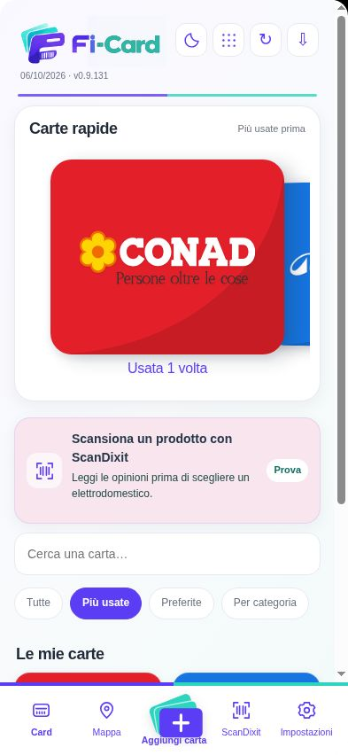
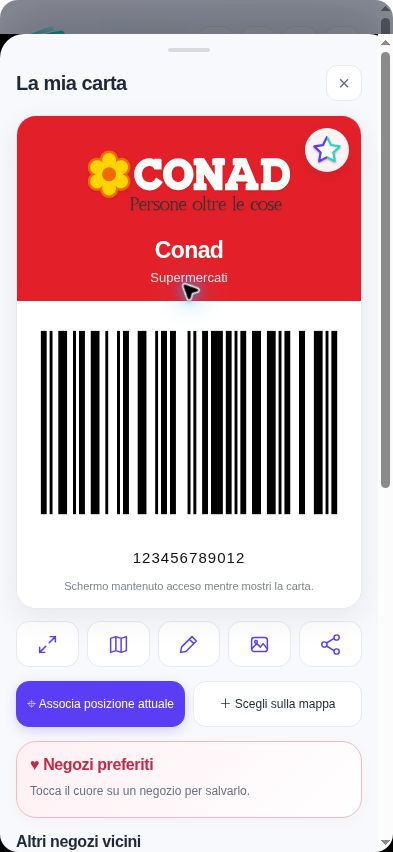
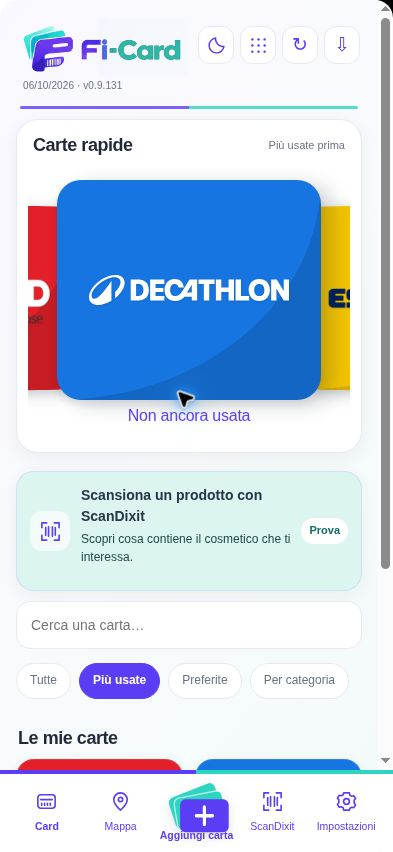
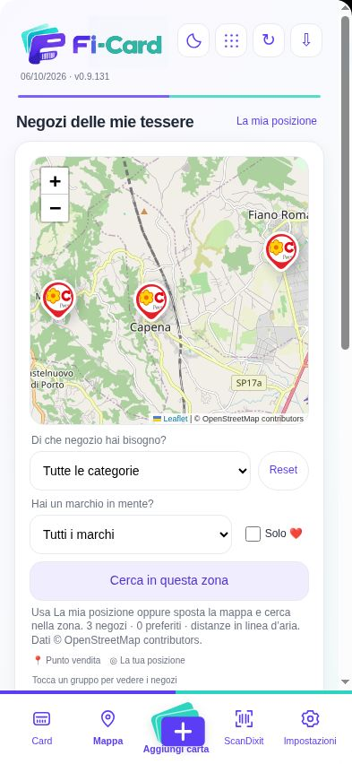
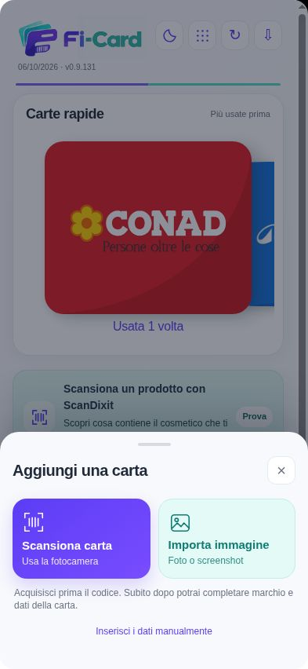
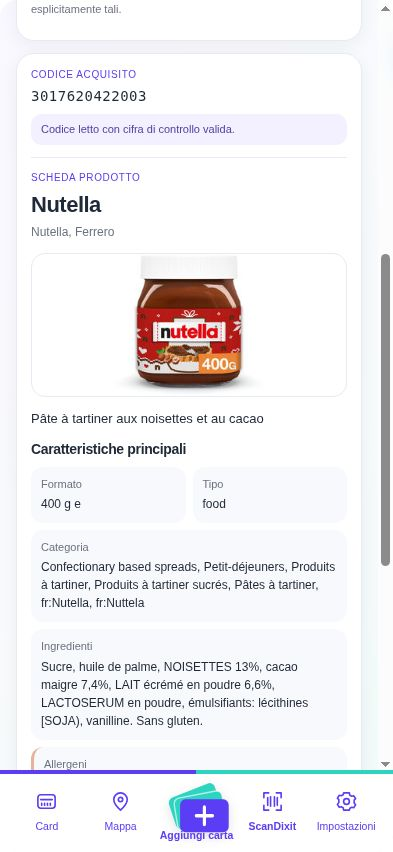
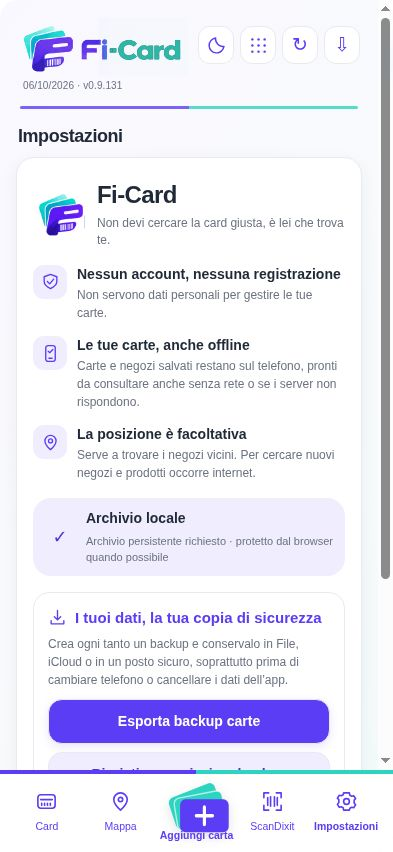

Inquadra il codice
Leggi il barcode o il QR con la fotocamera e conferma la tua carta.
01Carte fedeltà sul telefono, anche offline.
Le tue carte fedeltà sul telefono, anche senza internet.
Con la posizione attiva e il negozio associato, la carta giusta è in primo piano.

Senza accountNessuna registrazione per le carte.
Carte offlinePronte anche senza connessione.
Dati sul telefonoLe tue informazioni restano con te.
Guarda come funziona






Schermate di Fi-Card con carte dimostrative. L’esempio delle carte rapide usa una posizione simulata.
Card
Supermercato, sport, abbigliamento: raccogli le tue carte sul telefono e lascia spazio nel portafoglio.
Con la posizione attiva e il punto vendita associato, nelle carte rapide trovi in primo piano la carta del negozio in cui ti trovi. Aprila e mostra il codice alla cassa. Le altre carte restano a portata di mano, anche cercandole per nome o tra le preferite.
Mappa
Associa il punto vendita alla tua carta e attiva la posizione: Fi-Card usa la vicinanza per mettere la tessera in primo piano quando arrivi. Se la posizione non è disponibile, puoi sempre cercarla e aprirla manualmente.
Trova il punto venditaCerca sulla mappa o associa il tuo negozio.
Conserva la posizioneRitrovala insieme alla carta, anche alla prossima visita.
Apri la carta giustaLe carte vicine vengono prima. Se vuoi, avvia la navigazione.
La posizione è facoltativa. Le mappe e le nuove ricerche dei negozi richiedono internet; le carte e i punti salvati restano sul dispositivo.
Aggiungi carta
Non devi riscrivere tutto. Parti dal codice o da un’immagine della tua tessera.
Leggi il barcode o il QR con la fotocamera e conferma la tua carta.
01Usa una foto o uno screenshot della tessera che hai già sul telefono.
02Scegli il marchio, assegna un nome e inserisci il codice della tua carta.
03Un piccolo passo in più, una ricerca in meno.Associa il punto vendita alla carta: sarà più facile ritrovarla quando torni in negozio.
ScanDixit
Hai un prodotto davanti? Scansiona il codice e consulta la scheda disponibile: descrizione, caratteristiche e informazioni aggiuntive in un unico posto.
Vuoi approfondire? Apri Amazon per cercare il prodotto e leggere le recensioni.
Dentro Fi-Card, senza cambiare abitudine.La scansione parte dallo stesso menu in cui trovi le tue carte.
ScanDixit richiede una connessione. Le informazioni disponibili dipendono dal prodotto e dalle fonti consultate.
Impostazioni · Privacy
Fi-Card conserva le informazioni sul dispositivo e non richiede dati personali per gestire le carte.
Per aggiungere e consultare le carte non devi registrarti o compilare un profilo.
Le carte salvate sono consultabili anche senza connessione o quando i servizi online non sono disponibili.
Attivala per trovare i negozi vicini. Puoi gestire le carte anche senza condividerla.
Un’abitudine utile
I dati sono sul tuo telefono: crea periodicamente un file di backup e salvalo in un posto sicuro. Ti servirà per ripristinare le carte se cambi dispositivo o perdi i dati.
Domande frequenti
Semplice da usare, chiara nel funzionamento.
No. Fi-Card è un progetto indipendente, non affiliato a Stocard. Abbiamo voluto raccoglierne lo spirito e riportare le carte fedeltà al centro dell’app: semplici da aggiungere, facili da ritrovare e pronte da mostrare alla cassa.
Sì, puoi consultare le carte e i codici già salvati sul dispositivo. Le mappe, le nuove ricerche dei negozi e ScanDixit richiedono una connessione. I punti vendita salvati restano disponibili localmente.
No. Per aggiungere e gestire le tue carte non sono richiesti un account o dati personali.
No. Serve per cercare i punti vendita vicini e ordinare le carte in base alla distanza. Puoi scegliere di non attivarla e continuare a usare le tue carte.
Apri Impostazioni nell’app, esporta il file di backup e conservalo in un posto sicuro. Fallo periodicamente e prima di cambiare telefono o cancellare i dati dell’app. Quando serve, importa il file per ripristinare le carte e le posizioni incluse.
La disponibilità della scheda dipende dai cataloghi consultati. Quando sono presenti, Fi-Card mostra le informazioni del prodotto; il collegamento ad Amazon consente di proseguire la ricerca e consultare le recensioni.
Le versioni per iPhone e Android sono in preparazione. Su questo sito i collegamenti ai rispettivi store saranno attivati quando l’app sarà disponibile.
Come funziona, in pratica
Cosa resta disponibile sul telefono e come conservare una copia delle tue carte.
Leggi la guida →Posizione e carte rapideAssociazione del punto vendita, posizione facoltativa e cosa fare se il GPS è impreciso.
Leggi la guida →Foto e screenshotRecupera il codice da una foto o da uno screenshot, verifica la lettura e salva la carta.
Leggi la guida →Il tuo portafoglio, più leggero.
Le versioni per iPhone e Android sono in preparazione.